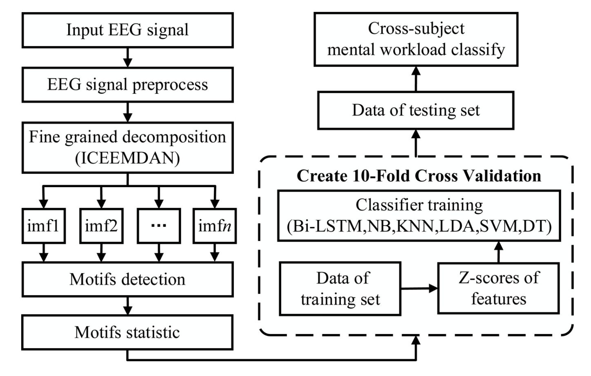
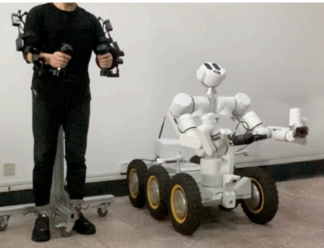

|
Yongliang Wang I am a PhD student at Interactive Robot Learning Laboratory, University of Groningen working under the supervision of Dr. Hamidreza Kasaei. My research is dedicated to developing algorithms that empower intelligent systems to learn through their interactions with the physical environment. The goal is to enable these systems to independently develop the perceptual and manipulative abilities required to perform intricate tasks and provide assistance to humans. Before coming to Groningen, I received my M.Eng. in Control Engineering from State Key Laboratory of Robotics, University of Chinese Academy of Sciences. During my master, I was fortunate to work with Ting Wang. I obtained my Bachelor of Engineering in Automation from Harbin University of Science and Technology. Throughout my undergraduate studies, I had the privilege of collaborating with Ling Huang. |

|
Updates
|
Research*: indicating equal contribution or alphabetic ordering. You can also check my Google Scholar profile. |

|
Self-supervised Learning for Joint Pushing and Grasping Policies in Highly Cluttered Environments
Yongliang Wang*, Kamal Mokhtar*, Cock Heemskerk, Hamidreza Kasaei ICRA, 2024 project page / video / arXiv We propose a Deep Reinforcement Learning (DRL) method that develops joint policies for grasping and pushing, enabling effective manipulation of target objects within untrained, densely cluttered environments. |
|

|
Fine-Grained and Multi-Scale Motif Features for Cross-Subject Mental Workload Assessment Using Bi-LSTM
Shiliang Shao, Ting Wang, Chunhe Song, Yun Su, Yongliang Wang, Chen Yao. Journal of Mechanics in Medicine and Biology, 2021 paper |
|

|
Research of HRV as a measure of mental workload in human and dual-arm robot interaction
Shiliang Shao, Ting Wang, Yongliang Wang, Yun Su, Chunhe Song, Chen Yao. Electronics, 2020 paper |
|
|
An Improved Grey-Wolf Optimization Algorithm Based on Circle Map
Yongliang Wang, Ting Wang, Shuxian Dong, Chen Yao. International Conference on Machine Learning and Computer Application, 2020 paper |
|
|
Improved Whale Optimization Algorithm Based on the Tent Chaotic Mapping and Nonlinear Convergence Factor
Shuxian Dong, Chunguang Bu, Yongliang Wang, International Conference on Machine Learning and Computer Application, 2020 paper |
Service
|